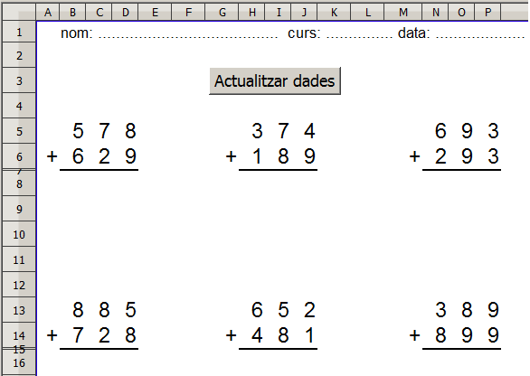
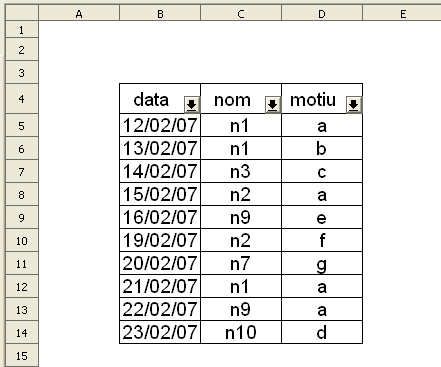

Presentació gràfica de l'activitat.

Funcions que es fan servir en aquesta activitat
Objectiu de l'activitat
Fer fitxes d'operacions matemàtiques per imprimirles.
Desenvolupament de l'activitat
1. Obrir el fitxer M6 i afegir un nou full anomenat M6P4 fitxes
2. Escriure a les cel·la B6 : =SI($A$1=0;ALEATENTRE(1;9))
3. Fer una copia de la cel·la B6 i enganxar-la a les cel·les dels rangs B6:D7 i G6:I7
Per imprimir, anar a la barra de menú i clic en Fitxer | Imprimeix … Ctrl+P i en mostrar una finestra anomenada Imprimeix, fer el següent:
En cas que convingui imprimir només el contingut d'unes determinades cel·les, llavors es seleccionen aquestes i es segueix el mateix procés explicat anteriorment amb la diferència de que caldrà fer clic al botó d'opció de Les cel·les selecciondes del bloc Imprimeix.
Fent clic al botó de l'Ajuda de la finestra Imprimeix (Ctrl+P), es pot accedir a més informació sobre el tema d'imprimir.
5. Fer una macro que permeti actualitzar els números de les operacions.
6. Protegir les cel·les que convingui.
7. Desar el fitxer M6.
Presentació gràfica de l'activitat.

Funcions que es fan servir en aquesta activitat
En aquesta activitat no cal escriure funcions a les cel·les.
Objectiu de l'activitat
Treballar amb els filtres.
Desenvolupament de l'activitat
1. Obrir el el fitxer M6 i afegir un nou full amb el nom de M6P4 faltes assistència.
2. Escriure en les cel·les del rang B5:D14 el que es veu en el gràfic de l'activitat de presentació.
3. Seleccionar les cel·les del rang B4:D14 i anar a Dades | Filtre | i clic en Filtre automàtic. Havent-ho fet, es veuran els indicadors desplegables a les cel·les B4, C4 i D4.
4. Per fer una selecció de l'alumne n9, només cal fer clic al desplegable de la cel·la C4 (nom) i clic en n9.
Havent-ho fet, només s'haurien de veure dues files corresponent al nom n9.
5. Per tornar a veure tot el llistat, desplegar la cel·la C4 i fer clic en tot.
6. Per saber quantes faltes d'assistència s'han fet pel motiu a, fer clic al desplegable de la cel·la D4 (motiu) i clic en a. Havent-ho fet, només s'haurien de veure quatre files.
7. Per tornar a veure tot el llistat, desplegar la cel·la D4 i fer clic en tot.
8. Per saber quantes faltes d'assistència l'alumne n1 ha fet pel motiu a, fer el següent:
Havent-ho fet, s'haurien de veure dues files en que l'alumne n1 ha fet dues faltes d'assistència pel motiu a.
9. Comprovar que funcioni correctament l'activitat.
10. Desar el fitxer M6.